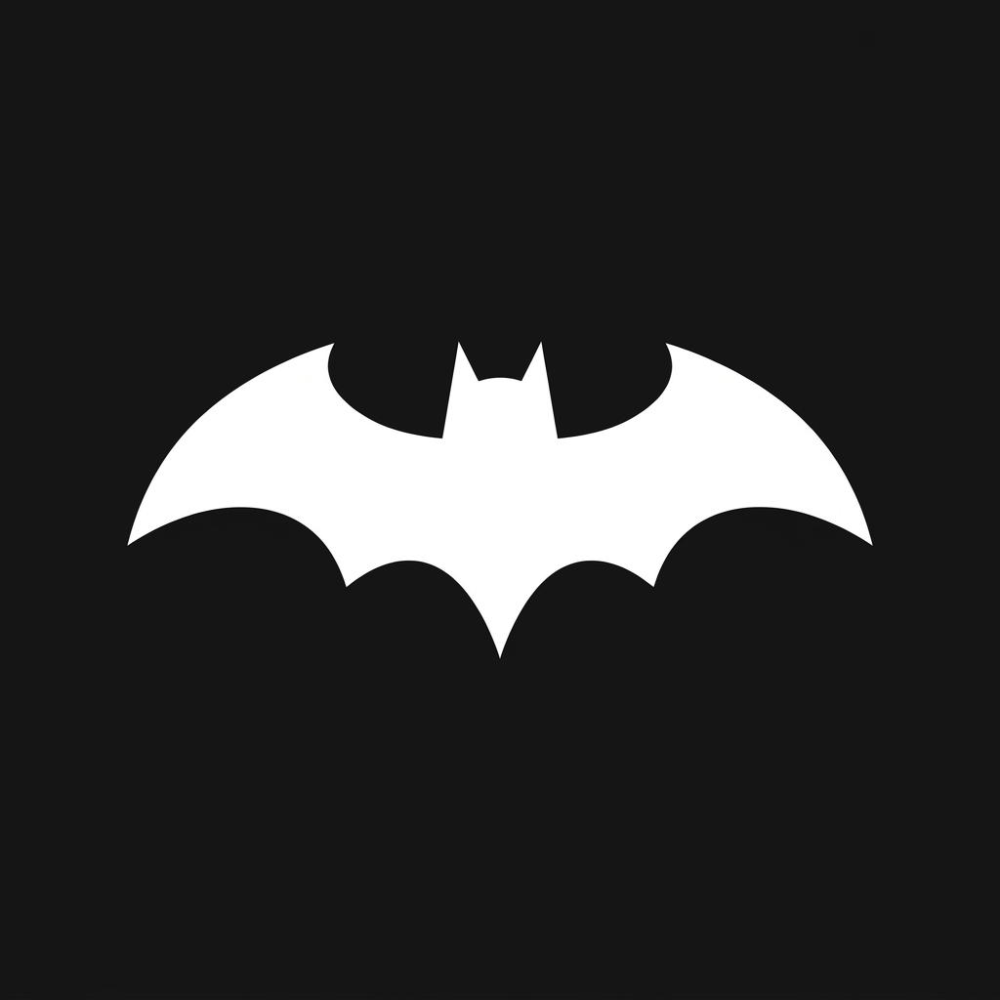

01
AI Agents
AI Agents and agentic workflows
Build retrieval pipelines, agentic RAG flows, multi-agent setups, vector search layers, and evaluation-ready AI application logic.


General Overview
I am a Python Machine Learning and AI Developer focused on building robust retrieval pipelines, agentic RAG workflows, vector search layers, and automated MLOps pipelines. I specialize in deploying fine-tuned models onto Google Vertex AI and orchestrating multi-agent systems that solve complex, real-world data challenges.
Milestones
Backend & Data
Integrated database schemas and designed REST APIs. Optimized ETL workflows and developed dashboards for data visualization.
NLP & Vision
Developed custom deep learning models for classification and text generation. Focused on transfer learning and optimization of transformer architectures.
Infrastructure & Search
Designed sub-second streaming ingestion syncs for vector databases. Built automated testing suites for ML models and optimized relational DB pipelines for embedding computations.
MLOps & Pipelines
Built continuous training and deployment pipelines on Google Vertex AI. Integrated MLflow for experiment tracking and developed custom reranking models to boost search relevance.
Lead Developer
Architecting multi-agent orchestrations and agentic RAG workflows using LangGraph and Vertex AI. Designing production-grade evaluation frameworks and self-correcting retrieval systems.
Stack
Selected Positioning
Build retrieval pipelines, agentic RAG flows, multi-agent setups, vector search layers, and evaluation-ready AI application logic.
Work across data collection, cleaning, model training, validation, evaluation, deployment, and continuous production monitoring.
Automate containerized deployment pipelines, manage container orchestration using Kubernetes, and deploy robust architectures on Google Cloud Platform.
Selected Deployments
An autonomous reasoning AI Agent for STEM fields designed to solve complex multi-step math proving, scientific simulation, and symbolic calculation tasks with self-correcting loop logic.
A multi-agent RAG framework using LangGraph to dynamically plan, retrieve, and validate queries across multiple documentation layers.
Continuous training and automated MLOps evaluation pipeline deploying fine-tuned transformer models onto Google Vertex AI endpoints.
A streaming ingestion sync computing real-time embeddings from relational DB changes directly into vector indexing stores.
Core Work & Research
A security scanning application checking local files for weak protections and permission configurations using ML techniques.
An environmental monitoring system classifying water safety and identifying potable thresholds in wastewater sumps.
A deep-learning computer vision system automating license plate detection and reading from vehicle images.
A customer segmentation application categorizing listeners based on music taste and database profiles.
A real-time vision classifier detecting face masks in video streams and logging compliance data.
A human-computer interaction system translating real-time hand movements into PC media controls.
Capabilities
How I Work
Clarify objective, data shape, metrics, constraints, and the expected user workflow.
Connect data, retrieval, model logic, APIs, and automation into one testable flow.
Validate outputs, add checks, monitor behavior, and prepare for iteration in production.
Continuous Learning
IBM · Cognitive Class
DeepLearning.TV · Cognitive Class
IBM · Cognitive Class
IBM · Cognitive Class
University of Michigan · Coursera
University of Michigan · Coursera